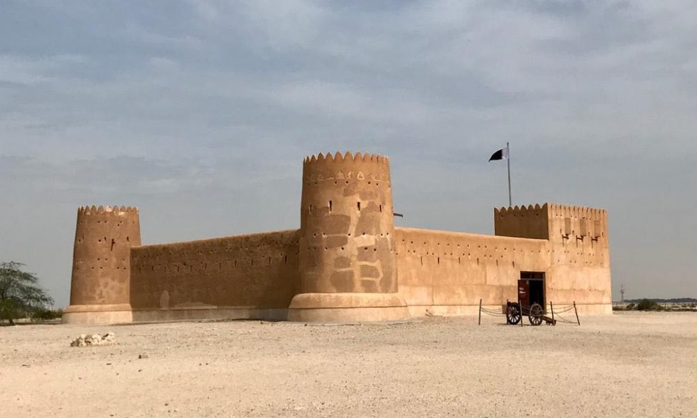

Il Qatar è un piccolo stato situato nella penisola arabica, nel Golfo Persico. Fondato nel 1825 dalla tribù Al Thani. Nel XIX secolo, il Qatar divenne un importante centro di commercio e pesca, subendo anche l'influenza di potenze regionali come l'Impero ottomano e la Gran Bretagna.
Nel 1916, il Qatar divenne uno stato dipendente del Trattato di Protezione britannico. Nel 1971, ottenne l'indipendenza dal dominio britannico e scelse di non unirsi agli Emirati Arabi Uniti.
Il Qatar ha investito in progetti infrastrutturali e si è affermato come un attore importante nella diplomazia regionale e internazionale. Ha sfruttato le sue ricche riserve di gas naturale per diversificare l'economia e diventare uno dei paesi più ricchi del mondo.
Il Qatar ha giocato un ruolo attivo nella Primavera Araba nel 2011, sostenendo i movimenti di cambiamento nel mondo arabo. Tuttavia, è stato oggetto di critiche per le sue politiche sui diritti umani e le condizioni dei lavoratori immigrati.
Il paese continua a perseguire una politica estera attiva, mediando conflitti regionali e costruendo relazioni internazionali. Ha investito in diversi settori, tra cui immobiliare, media e sport, guadagnando una grande influenza globale.
